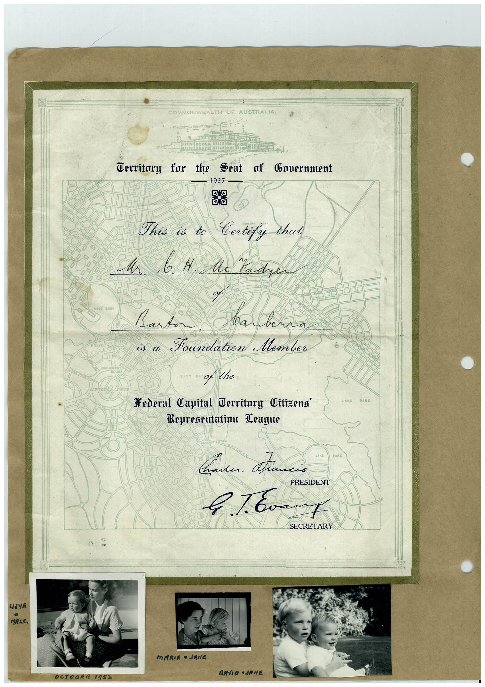

Book 1 · scan 027


Description
Transcription
Context
Review notes
Compare the machine draft with the scan. Handwriting and names need human review.
Artifacts
Edit the artifacts field in this note’s frontmatter to change these records. This summary is generated.
B01-S027-A01 — Certificate, Photo & Handwritten note — Book 1, scan 027
Types: Certificate, Photo, Handwritten note
Scope: Whole scanned page; individual items can be split out during review.
Caption: Not mapped yet.
Caption source: Not recorded yet.
Caption status: unmapped
Machine transcription
COMMONWEALTH OF AUSTRALIA. Cerritory for the Seat of Bauernment 1927 Mr This is to Certify that b. N. Me Kadyen of Barton вал is a Foundation Member Hederal Capital Territury Citizena' Representation Drague TAKE PARK вали. Палів PRESIDENT SECRETARY UAYA MALC. MARIE a JANE MAVIO •JANE OCTOBER 1952